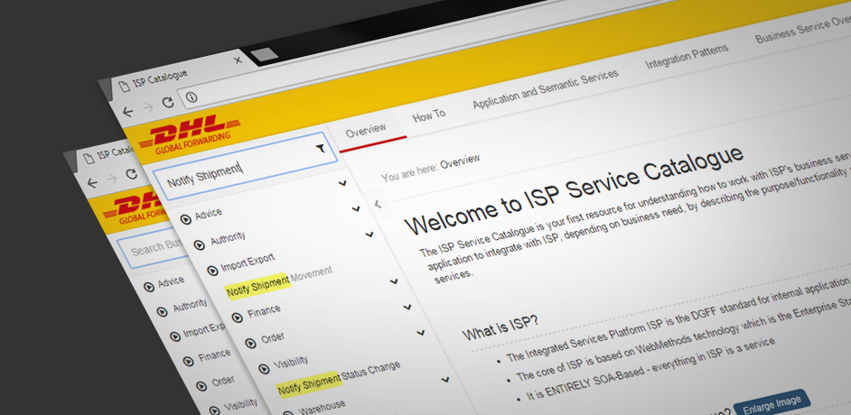
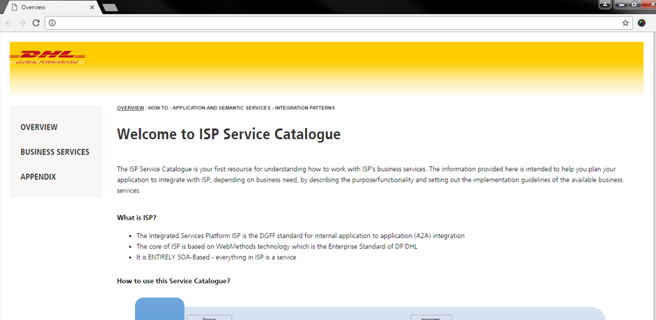
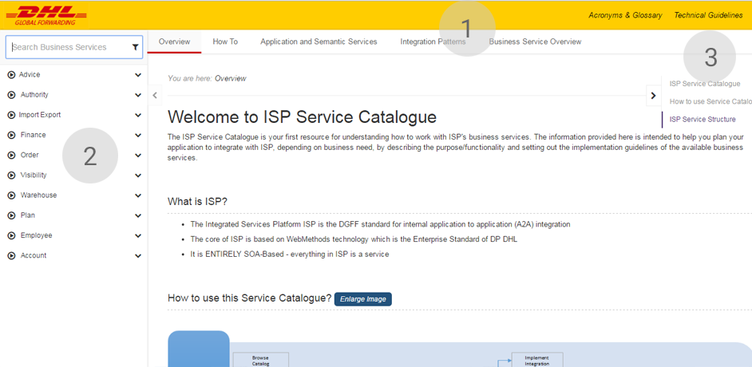

- Stories
- Service Catalogue
ISP Service Catalogue
The ISP Service Catalogue is your first resource for understanding how to work with ISP's business services.
The information provided in ISP is intended to help you plan your application to integrate with ISP,
depending on business need, by describing the purpose/functionality and setting out the implementation guidelines of the available business services.

Solving the real problem
Service catalogue contains a huge number of business services. The intended audience for this catalogue will be technical developers who wants to use the services of ISP.
Each service contains downloadable guides, schemas, end-point URls codelist etc.
The main objective while designing every application is the visibility of content, you might have a huge list of content but if it is not accessbile quickly, that may result in loss of user's interest or time.
Old Service Catalogue

Even though there are lots of pages in ISP service catalogue, you can only see 3 links in the old catalogue, now thats a challenge when you dont have content
available in first eye contact with the page, which means you have 3-4 levels of menu and will take a lots of click to reach the destination.
Improved Usability - Value Added
New Service Catalogue

- Visibility of Content
When we re-designed the catalogue we made sure that all the links are visible in the first eye contact. Not all the links but also all the business services are now
listed in a way that they are available with minimum efforts. In addition, Individual business services page contains a lots of section, so just of faster access we have
introduced a right fixed menu so that you can jump to the last section without even scrolling and at the same time you have the context for the whole page itself.
- Instant Search for Business Services
One of most efficient feature we have added in this catalogue is the instant business service search. The moment to reach the application by default search field of business services will be active you can start typing
and it will filter the services on each key press, allowing you to search items without much effort.
- Reduced to single click
The number of clicks are reduced drastically as we have expanded all the sub menu items page sections and even the services, now that maximum number of click you have to perform to get to
desired page is just "1".
- Time Saving
Ultimately performing all these task results in time saving for any user, business services can be searched instantly and all the other pages are displayed in a single view.
Transformation From A to B
The transformation from old design to new is quite evident in terms of User Experience as well as design aesthetics, the value added is quite high in terms of visibility, clarity of content and saving time of the techical team.